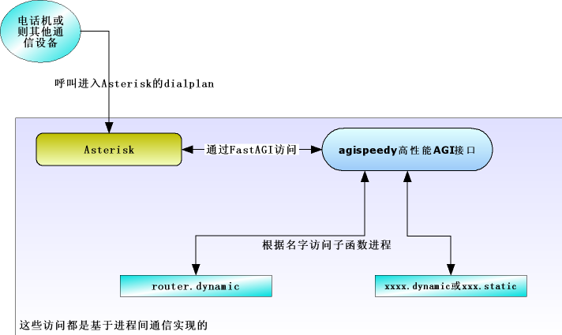

agispeedy的原理
AGI慢的主要原因，是由于Asterisk向系统发出请求,系统要启动一个新进程，解析PHP或Perl代码,解析完成后再将结果返回给Asterisk. 如果有100个人访问这个程序, 系统就要同样的事情做100次, 这当然性能很慢了. AGI的优势是灵活,方便，随时编写，随时修改，又不需要重新调整Asterisk
Asterisk App Module快的主要原因是, 负责执行部分的代码跟Asterisk主进程一起进入内存, 等待请求,并且处理请求. App复杂在,你需要了解Asterisk内部结构，并且由于其跟Asterisk紧密的关系，你必须根据指定版本编译,不能跨版本运行，而且如果你的代码经过了修改,也必须重新启动Asterisk. 驻留内存长期运行可能还会造成Memory Leak等问题.
FastAGI技术, FastAGI技术临界在 AGI和 APP之间。 FastAGI利用独立的进程，来解决AGI每次都需要解析的问题. 利用AGI的特征来解决,对Asterisk版本和编译的依赖, 即使FastAGI程序出现问题，也不会影响Asterisk主进程。 FastAGI同时也没有解决的一些问题是, FastAGI程序编写难度高,同样存在长期驻留内存可能造成Memory Leak的问题，并且你的程序如果经过修改，要重新启动FastAGI进程.
agispeedy技术, agispeedy技术是由freeiris2独创的一个新的小引擎，为了补充以上三者造成的缺陷而设计的。agispeedy是基于perl语言的，因此目前只能使用perl语言开发扩展. agispeedy 利用 fastagi 的原理，来提升执行性能。 而agispeedy 使用动态加载技术，来解决fastagi带来的问题. agispeedy带来的好处有:
解决了AGI低性能的问题
解决了FastAGI开发难度高的问题
解决了APP对Asterisk版本依赖的问题
随时变更代码无需重新启动agispeedy引擎或asterisk
代码即使编写的有问题也不会导致整个agispeedy引擎出现问题或asterisk出现问题
系统提供统一的数据库接口,访问数据库性能更高
提供跟标准AGI一模一样的Perl访问函数接口
比编写标准AGI还简单.
agispeedy的多用户访问引擎采用的是在linux下广泛被使用的PerFork(进程预创建),这是一种安全,可靠,廉价的多进程技术.
agispeedy实例讲解
我们在这里,现在编写一个简单的agispeedy的程序. 这个程序功能是这样"从 mysql中取得一个随机数,并且向asterisk发出指令让asterisk读出来".
首先我们编写agispeedy的程序
agispeedy程序要存储在/freeiris2/agimod/目录中,程序分两种:
静态程序: 结尾为.static的程序，该程序在agispeedy引擎加载的时候直接被加载, 如果程序有修改需要重新启动agispeedy引擎，该模式程序的性能更高,但是不够灵活
动态程序: 结尾为.dynamic的程序, 该程序在需要请求的时候才加载, 灵活性高, 性能稍微差那么一丁点.
不用说，我们这里选择动态程序方式.
我们的程序起名字叫/freeiris2/agimod/echo.dynamic代码如下:
# 我的测试程序
# 说明主函数,必写
sub echo_gpl_license(){return("my echo example");}
# 入口函数，名字要与文件名相同.
sub echo
{
my $self = shift; #agispeedy对象
my $AGI = $self->{server}{agi}; #Asterisk::config AGI对象
my $INPUT = $self->{server}{input}; #AGI参数
my $PARAM = $self->{server}{params}; #URL提交参数
my $FRI2CONF = $self->{server}->{fri2conf}; #Freeiris2配置
my $DBH = $self->database_pconnect(); #数据库资源
#从数据库中获得随机数
my $sth = $DBH->prepare("SELECT FLOOR(1000 + (RAND() * 2000))");
$sth->execute;
my $randnumber = $sth->fetchrow_arrayref();
#执行extension 指令应答用户
$AGI->exec("answer");
#播放这个数
$AGI->say_digits($randnumber->[0]);
#挂机
$AGI->hangup();
exit;
}
对这个程序进行语法测试,看看有没有写错的地方.
perl -t /freeiris2/agimod/echo.dynamic
如果没有返回任何东西表示正确
让extensions能执行到这个程序
登入freeiris2管理平台
系统选项-->高级设置-->检索主通信文件-->点击"extensions_dianplan.conf"
[from-exten-sip]下面增加两句:exten => 1234,1,AGI(agi://127.0.0.1/echo)
保存
使修改生效: 当前帐户-->重启系统-->重置系统
测试效果
打开你的软电话,拨号1234你会听到随机数了吧. 这就表示你编写的agispeedy程序正确得到运行了。
agispeedy程序的编写规则
agispeedy请求资源
exten => 1234,1,AGI(agi://127.0.0.1/echo)
exten => xxx,x,AGI(agi://127.0.0.1/程序名称?参数1=值1&参数2=值2&.......)
当你向asterisk请求这个资源后，asterisk会向agispeedy发出请求.
agispeedy会查找是否有叫这个echo的static如果没有会到目录agimod里找有没有echo.dynamic
如果找到echo.dynamic会先检查是否存在sub echo_gpl_license(){return("my echo example");}
再查找是否存在sub echo入口函数。如果存在就执行这个函数，否则报错.
agispeedy的资源
| my $self = shift; | agispeedy对象 |
| my $AGI = $self->{server}{agi}; | Asterisk::AGI一般AGI对象 参考http://search.cpan.org/~jamesgol/asterisk-perl-0.10/lib/Asterisk/AGI.pm |
| my $INPUT = $self->{server}{input}; | AGI输入参数hash数组引用，数据来自asterisk |
| my $PARAM = $self->{server}{params}; | 请求参数hash数组引用，数据来自 程序名称?参数1=值1&参数2=值2 |
| my $FRI2CONF = $self->{server}->{fri2conf}; | Freeiris2主配置文件hash数组引用 |
| my $DBH = $self->database_pconnect(); | 数据库DBI对象 |
agispeedy的调试
如果你想看到更多的agispeedy的调试数据。要先停止内存中的fri2d监视进程。
/etc/init.d/fri2d stop
手动执行agispeedy并且加上调试参数
/freeiris2/bin/agispeedy --verbose
这个时候系统就会显示出相关调试参数.
如果你要在asterisk cli下调试。在cli下输入agi debug就可以看到调试信息。如果关闭就是agi no debug